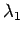
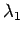

Inhalt Index DeskTop Bronstein

 Lineare Algebra Eigenwertaufgaben bei Matrizen Spezielles Eigenwertproblem
Lineare Algebra Eigenwertaufgaben bei Matrizen Spezielles Eigenwertproblem


Als Beispiel wird die Potenzmethode von MISES betrachtet.
Hierbei handelt es sich um ein Iterationsverfahren zur Bestimmung des betragsgrößten Eigenwertes und des zugehörigen Eigenvektors einer Matrix , falls  reell und symmetrisch ist und einen betragsgrößten (dominanten) Eigenwert hat. Dieser sei . Dann gilt:
reell und symmetrisch ist und einen betragsgrößten (dominanten) Eigenwert hat. Dieser sei . Dann gilt:
Die Matrix  hat n linear unabhängige Eigenvektoren . Daraus folgt:
hat n linear unabhängige Eigenvektoren . Daraus folgt:
Daraus folgt unter Beachtung von (4.146):
| Beispiel |
|
Zahlenbeispiel mit |
Hinweise: